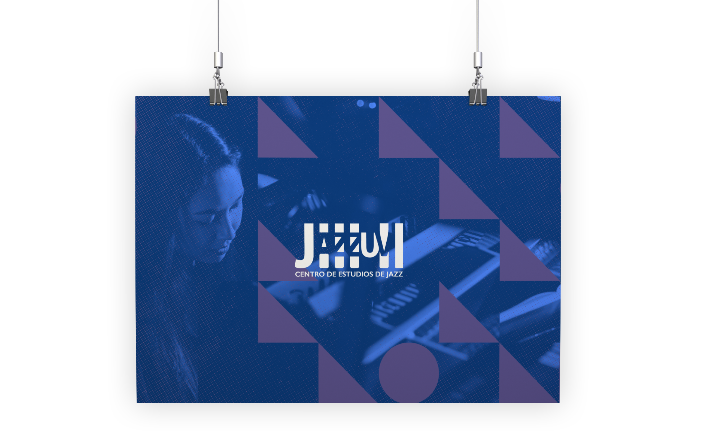
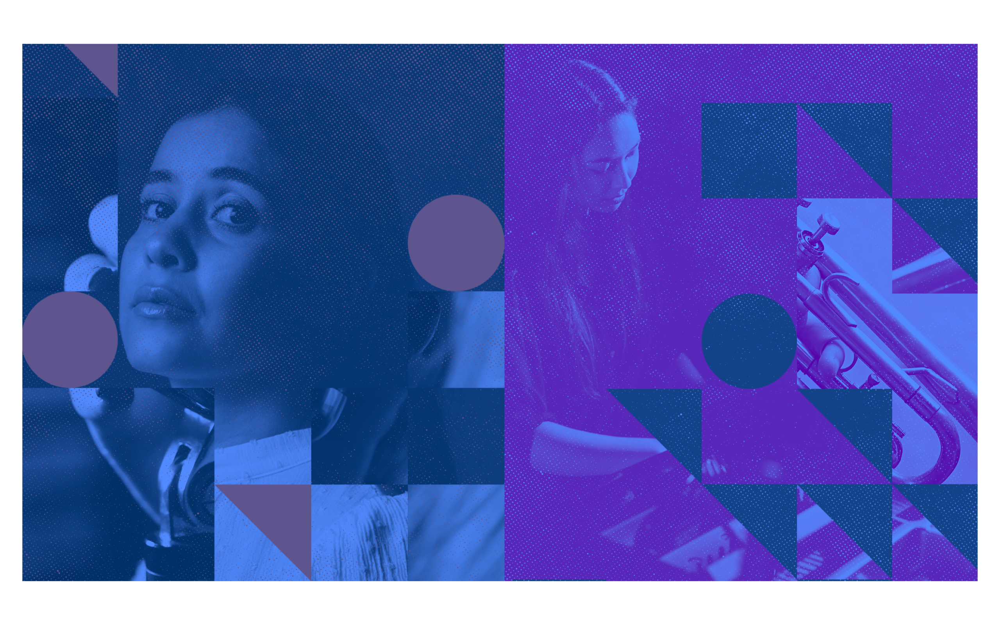
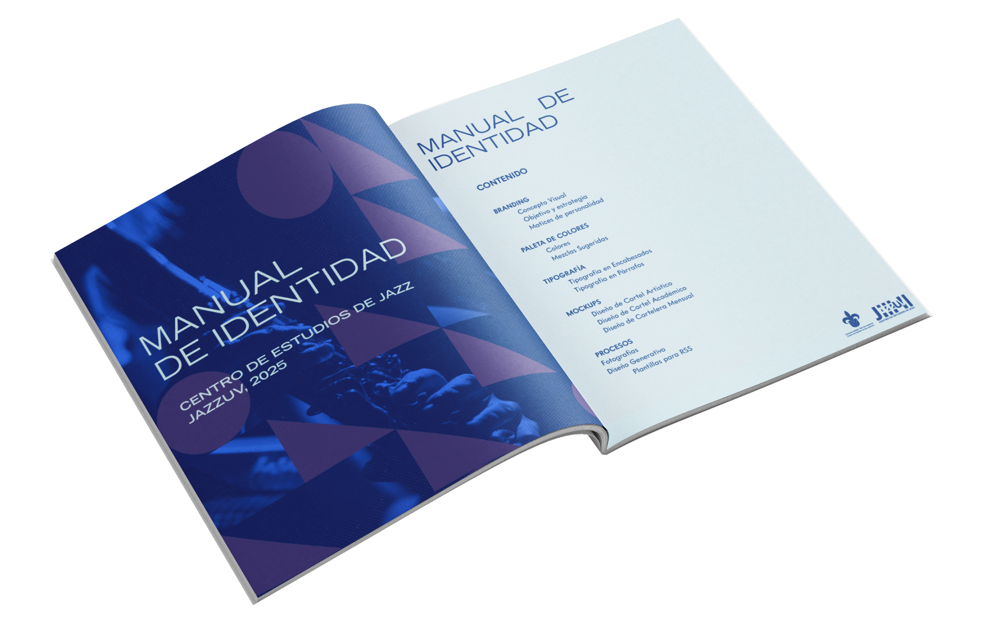

04
JazzUV
Identidad Visual
Centro de Estudios de Jazz de la Universidad Veracruzana
Xalapa, 2024
Identidad visual para el Centro de Estudios de Jazz de la Universidad Veracruzana, una institución dedicada a la formación, investigación
y difusión del jazz desde Xalapa.
El concepto visual se construyó desde los mismos referentes que definen al jazz como lenguaje gráfico: el legado de Reid Miles y su trabajo para Blue Note Records, donde la tipografía y la composición se volvieron instrumentos capaces de traducir improvisación y energía en imagen.
S. Neil Fujita y la fotografía de Francis Wolff como punto de partida para entender cómo la gráfica del jazz no ilustra la música, la interpreta.
El motor técnico del sistema es Processing: un entorno de programación creativa que permite generar composiciones únicas a partir de reglas definidas. Ritmo, color e improvisación se traducen en patrones geométricos en constante evolución, estructuras visuales flexibles, adaptables y reconocibles.
El sistema atravesó comunicación digital, materiales impresos, señalética y piezas institucionales. Cada aplicación es una reinterpretación de las mismas reglas bajo condiciones distintas, la misma lógica interna habitando espacios y escalas diferentes sin perder coherencia
ni identidad.


